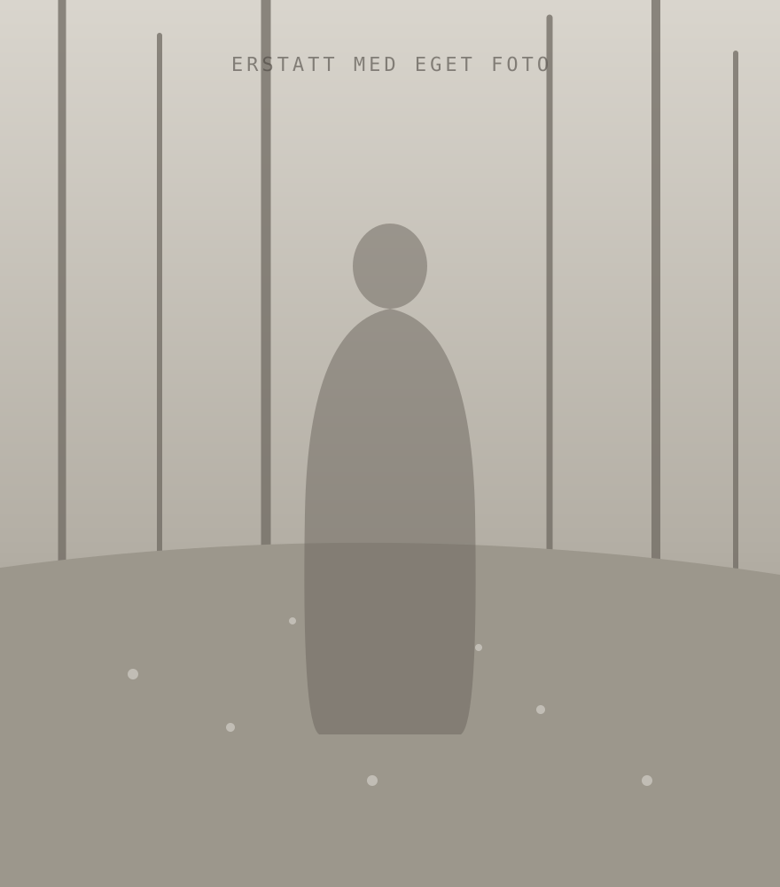

Odderøya festning · 58.1322° N, 8.0036° E
Opplev angrepet på Kristiansand, på stedet der det skjedde
Opplev den ekte historien om angrepet på Kristiansand, i friluft på stedet der forsvaret av byen stod. Hør løsningen på gåten om det Franske flagget, og hvorfor Kristiansands forsvarere levde i skam etter krigens slutt, med ekte bilder og historier fra 9. april 1940.
Bestill en tur- Gruppestørrelse
- 8+ personer
- Pris
- 150,– per person

Din guide
Min morfar skrev en bok i 1995
Jeg vokste opp en kort spasertur fra Odderøya, der kanonstillingene fortsatt er hugget inn i fjellet. Det som startet som nysgjerrighet på betongen i skogen, ble til år med graving i krigsarkiver, lokale beretninger og festningsverkene Wehrmacht etterlot langs denne kysten.
Jeg leder hver vandring selv, i grupper små nok til å komme inn i tunnelene og batteriene bussturer hopper over. Ingen manus lest opp fra et kort. Bare grunnen, konstruksjonene som fortsatt står der, og historien som forklarer hvorfor de er der.
Om historien
Se den dramatiske historien
Bestill en tur
Bestill din vandring gjennom historien
Ta kontakt for å booke den guidede turen på Odderøya. Jeg vil kontakte deg og avtale passende tidspunkt.